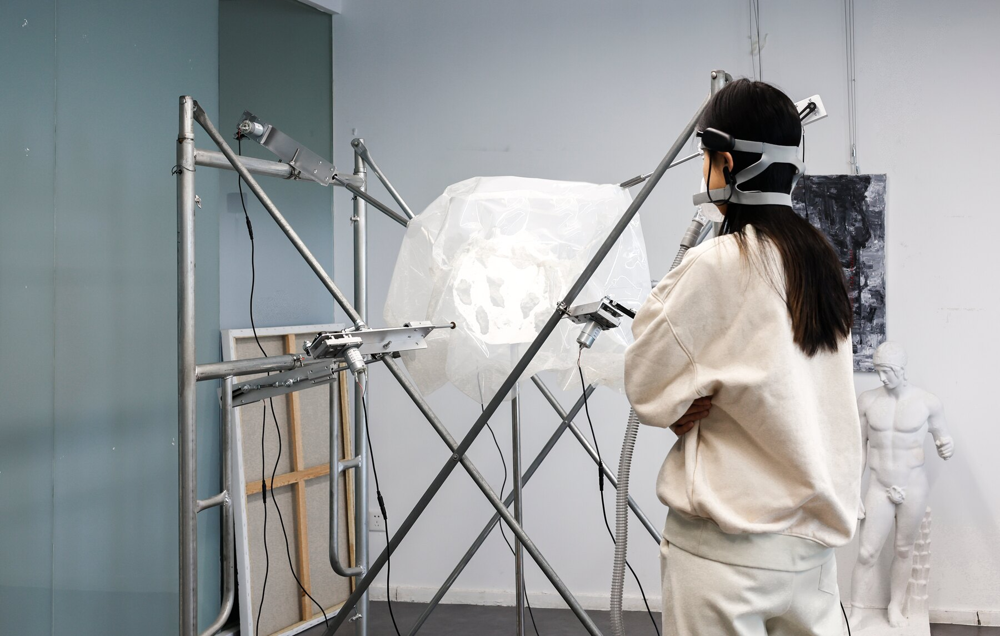
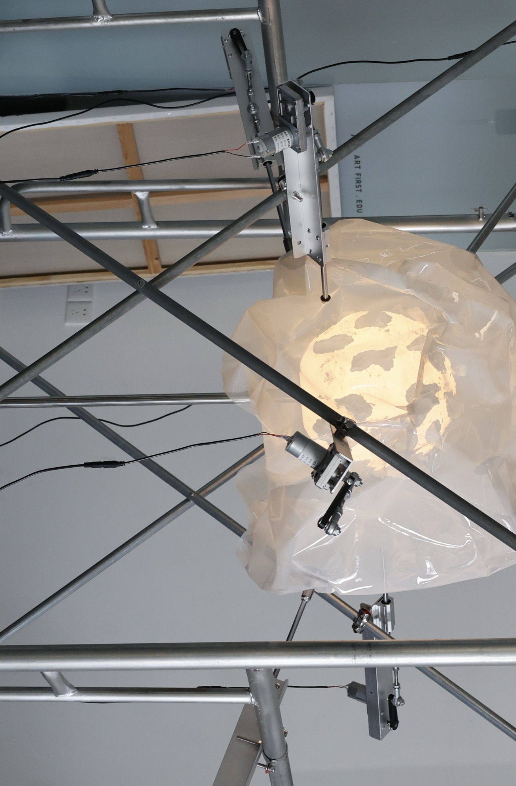
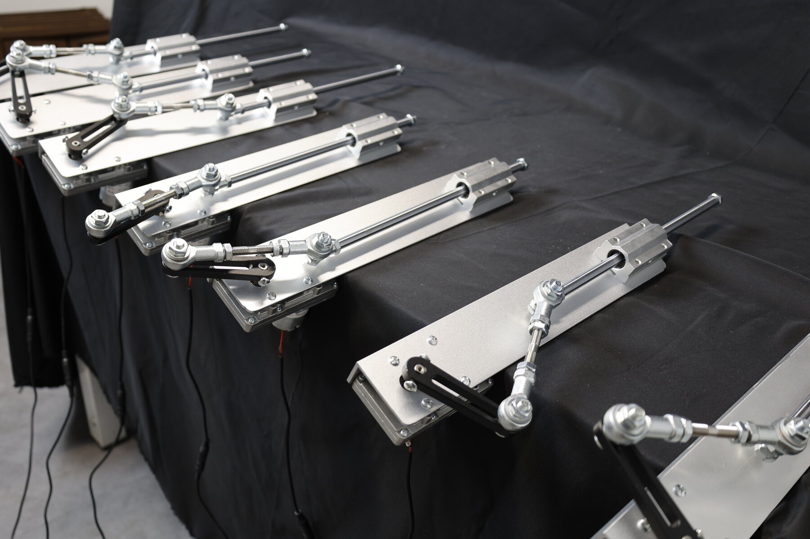
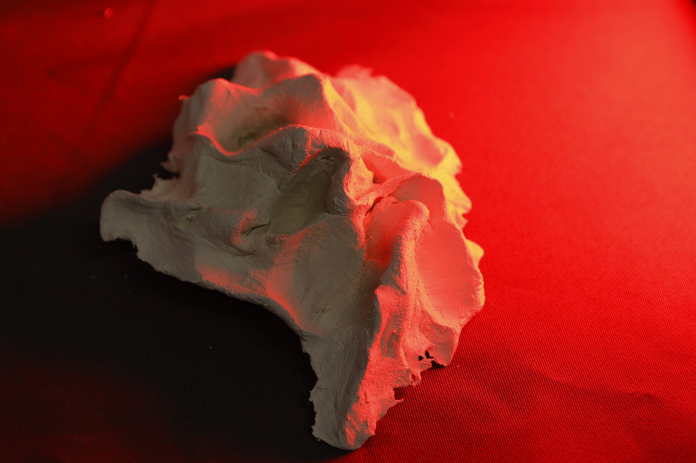
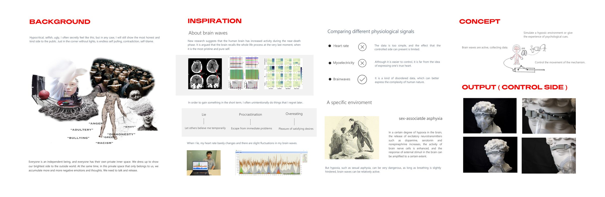
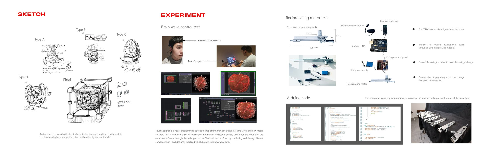
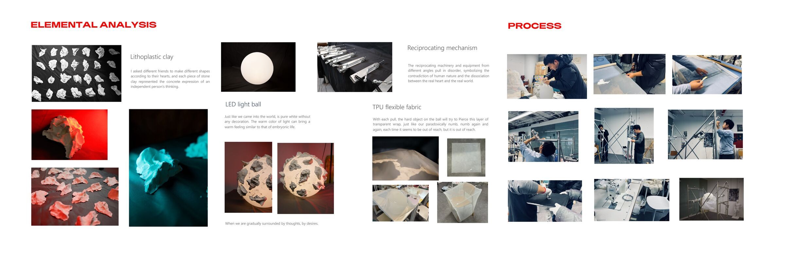
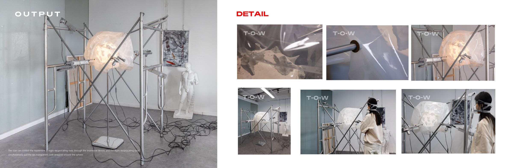

Tug-of-war
Express the tug and contradiction of human nature through a mechanical device controlled by brainwaves.

Hypocritical, selfish, ugly. In a corner without light there is endless self-pulling, contradiction, and self-blame. We dress up to show the world our brightest side, and in the private space that belongs only to us we keep collecting the things we cannot say.
Brainwave data from an EEG kit travels over Bluetooth to an Arduino system that drives eight reciprocating rods. The rods pull a transparent TPU sphere from every angle at once. Each pull is a desire, a regret, a numbness that reaches for something and never quite touches it.
Heart rate is too simple. Myoelectricity is too easy to control. Brainwaves are disordered data, and that disorder is the closest thing to an honest inner self.




Exhibition boards tap a board to read it full size



